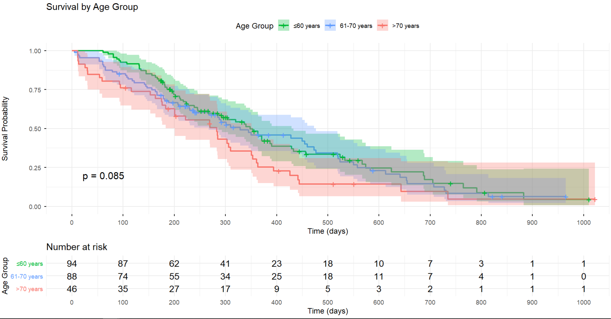
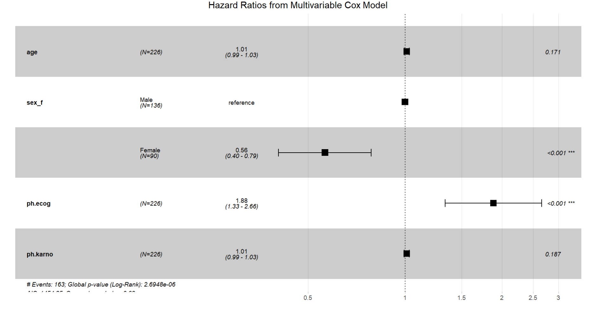

Introduction to Survival Analysis
What is Survival Analysis?
Survival analysis is a collection of statistical methods for analyzing time-to-event data.
- Time-to-event: Duration until a specific event occurs
- Originally developed for studying death (hence “survival”)
- Now used broadly: disease progression, equipment failure, customer churn, etc.
Why Not Use Standard Methods?
Problems with standard methods:
- Censoring (incomplete observations)
- Non-normal distributions
- Time-dependent covariates
- Interest in hazard rates
Example:
A patient enters a study on Day 0 and is followed for 2 years. If they’re still alive at the end, we know they survived at least 2 years, but not their actual survival time.
Key Concepts: Censoring
Censoring occurs when we have incomplete information about survival time.
Types of Censoring:
- Right censoring (most common)
- Event hasn’t occurred by end of study
- Patient lost to follow-up
- Patient withdraws
- Left censoring (rare)
- Event occurred before observation began
- Interval censoring
- Event occurred between two observation times
Visual Example of Censoring
Patient 1: |--------● Event at 8 months
Patient 2: |---------------● Event at 15 months
Patient 3: |--------------------○ Censored at 20 months (study ended)
Patient 4: |----------○ Censored at 10 months (lost to follow-up)
Patient 5: |-----● Event at 5 months
Time → 0 5 10 15 20
● = Event occurred
○ = Censored observation
The Survival Function S(t)
The survival function gives the probability of surviving beyond time t:
\[S(t) = P(T > t)\]
Where T is the survival time random variable.
Properties:
- S(0) = 1 (everyone alive at start)
- S(∞) = 0 (eventually everyone experiences event)
- S(t) is non-increasing (monotone decreasing)
The Hazard Function h(t)
The hazard function (or hazard rate) is the instantaneous event rate at time t, given survival up to time t:
\[h(t) = \lim_{\Delta t \to 0} \frac{P(t \leq T < t + \Delta t | T \geq t)}{\Delta t}\]
Interpretation:
- Risk of event at time t among those who haven’t experienced it yet
- Can increase, decrease, or stay constant over time
- Unlike probability, can exceed 1.0
Survival Data Structure
Each observation requires:
- Time: Duration from start to event or censoring
- Status: Event occurred (1) or censored (0)
- Covariates: Variables that might affect survival (age, treatment, etc.)
Survival Data Structure (cont.)
Example:
| 1 |
15 |
1 |
A |
45 |
| 2 |
20 |
0 |
B |
52 |
| 3 |
8 |
1 |
A |
38 |
Common Applications in Biostatistics
- Clinical trials: Time to death, disease progression, or relapse
- Epidemiology: Time to disease onset
- Cancer research: Overall survival, progression-free survival
- Infectious diseases: Time to infection or recovery
- Cardiology: Time to heart attack or stroke
- Health economics: Time to hospital readmission
Types of Survival Analysis Methods
- Non-parametric methods
- Kaplan-Meier estimator
- Log-rank test
- Semi-parametric methods
- Cox proportional hazards model
- Parametric methods
- Exponential, Weibull, log-normal models
We’ll focus on the first two in this course.
The Kaplan-Meier Estimator
The Kaplan-Meier (KM) estimator is a non-parametric method for estimating the survival function from observed survival times.
Also known as: - Product-limit estimator - KM curve - Survival curve
Key advantage: Handles censored data naturally
Step-by-Step Example
| 0 |
10 |
0 |
0 |
1.0 |
| 3 |
10 |
1 |
0 |
0.9 (9/10) |
| 5 |
9 |
0 |
1 |
0.9 |
| 7 |
8 |
2 |
0 |
0.675 (0.9 × 6/8) |
| 10 |
6 |
1 |
0 |
0.563 (0.675 × 5/6) |
Note: Censored observations contribute to “at risk” until their censoring time.
Interpreting KM Curves
Key features:
- Y-axis: Survival probability (0 to 1)
- X-axis: Time
- Step function (drops at event times)
- Vertical tick marks = censored observations
- Confidence bands show uncertainty
What to look for:
- Median survival time
- Survival at specific timepoints
- Shape of curve (steep vs. gradual decline)
- Comparison between groups
Confidence Intervals
KM estimates come with confidence intervals using:
- Greenwood’s formula for standard error
- Log-log transformation for CI construction (most common)
- Plain or log transformation (alternatives)
Wider CIs occur when: - Fewer subjects at risk - More censoring - Later time points
Comparing Survival Curves
When comparing multiple groups (e.g., treatment A vs. B):
Visual comparison: - Separate KM curves on same plot - Non-overlapping CIs suggest difference - Crossing curves indicate non-proportional hazards
Statistical test: - Log-rank test (next lecture) - Tests whether survival distributions differ
Comparing Survival Curves (cont)

Assumptions of KM Method
- Censoring is independent of survival
- Censored subjects have same prognosis as those continuing
- Survival probabilities are the same for early and late recruits
- No time trends in underlying risk
- Events occur at specified times
- No measurement error in event times
Limitations of KM Method
- No covariate adjustment: Can’t control for confounders
- Descriptive only: Doesn’t quantify effects
- Limited to categorical comparisons: Can’t use continuous variables
- Assumes independence: Issues with competing risks
- Small sample problems: Unstable at tail of distribution
Solution: Use Cox regression for multivariable analysis
When to Use KM Curves
Ideal for:
- Describing survival experience
- Initial exploratory analysis
- Comparing 2-3 groups visually
- Reporting outcomes in clinical trials
- Communicating with non-statisticians
When to Use KM Curves (cont.)
Use with caution:
- When many covariates need adjustment
- Small sample sizes
- Heavy censoring (>50%)
Purpose of the Log-Rank Test
The log-rank test is a hypothesis test to compare survival distributions of two or more groups.
Null hypothesis (H₀): Survival distributions are the same across groups
Alternative hypothesis (H₁): At least one group differs
It’s the most common statistical test for comparing survival curves.
How the Log-Rank Test Works
The test compares:
- Observed number of events in each group
- Expected number of events if H₀ were true
At each event time:
- Calculate expected events under H₀
- Sum over all event times
- Compute test statistic
- Compare to chi-square distribution
Log-Rank Test Statistic
The test statistic follows a chi-square distribution:
\[\chi^2 = \frac{(O - E)^2}{E}\]
For multiple groups:
\[\chi^2 = \sum_{j=1}^{g} \frac{(O_j - E_j)^2}{E_j}\]
- Degrees of freedom = number of groups - 1
- Larger values provide evidence against H₀
Example Calculation Concept
At each event time t:
Expected events in group 1:
\[E_{1t} = \frac{n_{1t}}{n_t} \times d_t\]
Where: - \(n_{1t}\) = at risk in group 1 at time t - \(n_t\) = total at risk at time t
- \(d_t\) = total events at time t
Sum expected and observed across all event times, then compute test statistic.
Interpreting Log-Rank Results
P-value interpretation:
- p < 0.05: Evidence of difference in survival between groups
- p ≥ 0.05: Insufficient evidence of difference
Important notes:
- Tests equality of entire survival distributions
- Doesn’t specify which group is better
- Doesn’t quantify magnitude of difference
- Look at KM curves for direction and clinical significance
Assumptions of Log-Rank Test
- Independent censoring
- Censoring unrelated to prognosis
- Similar censoring patterns
- Censoring mechanisms similar across groups
- Proportional hazards (approximately)
- Hazard ratio is roughly constant over time
- Most powerful when this holds
When Assumptions Are Violated
Non-proportional hazards:
- KM curves cross
- Early vs. late effects differ
- Treatment effect changes over time
Solutions:
- Weighted log-rank tests (e.g., Peto-Peto, Fleming-Harrington)
- Stratified log-rank test
- Restricted mean survival time comparison
- Report results at specific time points
Stratified Log-Rank Test
Used when you want to:
- Compare groups while adjusting for a categorical variable
- Account for a potential confounder
- Test within strata and combine results
Example: Comparing treatments while stratifying by disease stage
Limitation: Can only stratify by categorical variables with few levels
Multiple Group Comparisons
When comparing >2 groups:
- Overall test
- Single p-value testing any difference
- Degrees of freedom = groups - 1
- Pairwise comparisons
- All possible pairs
- Adjust for multiple testing (e.g., Bonferroni)
- Or use trend test if groups are ordered
Log-Rank vs. Other Tests
Alternatives:
- Wilcoxon test (Breslow)
- Gives more weight to early events
- Better when early differences matter
- Tarone-Ware test
- Fleming-Harrington family
- Flexible weighting schemes
Most common: Log-rank test (equal weighting)
Reporting Log-Rank Results
Essential elements:
- Test statistic and degrees of freedom
- P-value
- Sample sizes and event numbers per group
- Median survival times with CIs
- KM curve figure
- Clear statement of findings
Example: “The log-rank test showed significantly better survival in the treatment group (χ² = 8.42, df = 1, p = 0.004).”
Cox Proportional Hazards Model
Introduction to Cox Regression
The Cox proportional hazards model is a semi-parametric regression method for survival data.
Key features:
- Most widely used multivariable survival method
- Estimates effects of covariates on hazard
- No assumption about baseline hazard shape
- Can include multiple predictors
- Handles both continuous and categorical variables
Why “Proportional Hazards”?
Proportional hazards assumption: The hazard ratio between any two individuals is constant over time.
For two subjects with covariate values \(X_1\) and \(X_2\):
\[\frac{h(t|X_1)}{h(t|X_2)} = \exp[\beta(X_1 - X_2)]\]
This ratio doesn’t depend on time t.
Implication: Effects are multiplicative on hazard scale
Interpreting Cox Coefficients
The coefficient \(\beta\) represents:
- Log hazard ratio per unit increase in covariate
- Positive \(\beta\): Increased hazard (worse survival)
- Negative \(\beta\): Decreased hazard (better survival)
- \(\beta = 0\): No effect
Note: Coefficients are on log scale, so we exponentiate to get hazard ratios (next lecture).
Interpreting Cox Coefficients (cont.)

Categorical Predictors
For categorical variables (e.g., treatment group):
- One category is the reference
- Coefficients represent log hazard ratios vs. reference
- Can have multiple categories (multiple dummy variables)
Example: Treatment (A vs. B)
- Reference: Treatment A
- Coefficient for B: log(HR) comparing B to A
Continuous Predictors
For continuous variables (e.g., age):
- Coefficient is per one-unit increase
- Assume linear relationship with log-hazard
- Can transform if needed (log, polynomial)
- Can categorize, but loses information
Example: Age coefficient = 0.05
- Hazard increases 5% per year of age (approximately)
Multiple Predictors
Cox models can include many predictors simultaneously:
Advantages:
- Control for confounding
- Identify independent predictors
- More efficient use of data
- Test interactions
Multiple Predictors (cont.)
Considerations:
- Need adequate sample size (events, not just subjects)
- Rule of thumb: ≥10 events per predictor variable
Model Building Strategy
- Univariable screening
- Test each predictor separately
- Identify candidates (p < 0.2 or clinical importance)
- Multivariable model
- Include candidate predictors
- Check proportional hazards assumption
- Consider interactions
Model Building Strategy (cont.)
- Model reduction
- Remove non-significant predictors (if appropriate)
- Compare nested models with likelihood ratio tests
Time-Dependent Covariates
Standard Cox model: Covariates measured at baseline
Time-dependent covariates: Values change during follow-up
Examples:
- Transplant status (waiting vs. transplanted)
- Disease status (remission vs. relapse)
- Medication changes
Requires special coding and extended Cox model formulation.
Stratified Cox Model
When proportional hazards assumption fails for a variable:
Solution: Stratify by that variable
- Allows different baseline hazards per stratum
- Estimates common effect for other covariates
- Doesn’t estimate effect of stratification variable
Example: Stratify by hospital, estimate treatment effect
Assumptions of Cox Model
- Proportional hazards
- Hazard ratio constant over time
- Linear relationship
- Log-hazard linear in continuous predictors
- Independence
- Correct functional form
- Appropriate transformations
Checking Proportional Hazards
Methods:
- Graphical
- Log-log plots should be parallel
- Schoenfeld residuals vs. time (flat line)
- Statistical
- Test correlation of scaled Schoenfeld residuals with time
- Global test for all covariates
Checking Proportional Hazards (cont.)
If violated:
- Stratify on that variable
- Include time interaction
- Use time-varying coefficient model
Advantages of Cox Model
- Semi-parametric: Flexible baseline hazard
- Robust: Handles various distributions
- Multivariable: Controls for confounding
- Efficient: Uses all available data
- Interpretable: Hazard ratios
- Standard: Widely accepted in medical research
Limitations of Cox Model
- Proportional hazards: May not always hold
- Complexity: More assumptions than KM
- Sample size: Needs adequate events
- Non-linearity: May need transformations
- No absolute risk: Only relative comparisons
- Competing risks: Needs special handling
Interpreting Hazard Ratios
What is a Hazard Ratio?
Hazard Ratio (HR) is the ratio of hazards between two groups or for a unit change in a continuous variable.
\[HR = \frac{h_1(t)}{h_0(t)} = \exp(\beta)\]
Where \(\beta\) is the Cox regression coefficient.
Key point: HR is obtained by exponentiating the coefficient.
Hazard Ratio Scale
HR interpretation:
- HR = 1: No difference in hazard
- HR > 1: Increased hazard (worse outcome)
- HR < 1: Decreased hazard (better outcome)
Hazard Ratio Scale (cont.)
Examples:
- HR = 2.0: Twice the hazard
- HR = 0.5: Half the hazard
- HR = 1.5: 50% increase in hazard
- HR = 0.75: 25% decrease in hazard
Converting Between Representations
From coefficient to HR:
\[HR = e^{\beta}\]
From HR to coefficient:
\[\beta = \ln(HR)\]
Percentage change:
\[(HR - 1) \times 100\%\]
Example: Binary Predictor
Scenario: Comparing new treatment to standard care
Cox output: \(\beta = -0.47\), standard error = 0.15
Calculations:
- \(HR = e^{-0.47} = 0.625\)
- 95% CI: \(e^{-0.47 \pm 1.96 \times 0.15}\) = (0.47, 0.84)
Interpretation: New treatment reduces hazard of death by 37.5% compared to standard care.
Example: Continuous Predictor
Scenario: Effect of age on mortality
Cox output: \(\beta = 0.03\) per year
Calculations:
- HR = \(e^{0.03}\) = 1.03 per year
- HR for 10 years = \(e^{0.03 \times 10}\) = 1.35
Interpretation: Each additional year of age increases hazard by 3%. A 10-year age difference corresponds to 35% increase in hazard.
Confidence Intervals for HR
95% CI formula:
\[e^{\beta \pm 1.96 \times SE(\beta)}\]
Interpretation:
- If CI excludes 1.0: Statistically significant
- If CI includes 1.0: Not statistically significant
- Width indicates precision of estimate
Example: HR = 0.62 (95% CI: 0.47-0.84)
The effect is significant, and we’re 95% confident the true HR is between 0.47 and 0.84.
P-Values vs. Confidence Intervals
P-value:
- Tests H₀: HR = 1
- Dichotomous (significant or not)
- Doesn’t show magnitude or precision
Confidence interval:
- Shows range of plausible values
- Indicates precision
- Shows clinical significance
- Preferred for interpretation
Common Misinterpretations
- “HR = 2 means you’ll die twice as fast”
- Wrong: It means double the instantaneous risk
- “HR = 0.5 means 50% will survive”
- Wrong: HR is about rates, not proportions
- “HR constant means same absolute benefit”
- Wrong: Absolute benefit depends on baseline risk
- “Non-significant means no effect”
- Wrong: Could be due to small sample size
Hazard Ratio vs. Risk Ratio
Hazard Ratio (HR):
- Compares instantaneous event rates
- From survival analysis
- Accounts for timing
Risk Ratio (RR):
- Compares cumulative probabilities
- From standard analysis
- Doesn’t account for timing
Generally: HR ≠ RR, but often similar in direction
Adjusted vs. Unadjusted HR
Unadjusted (crude) HR:
- Single predictor model
- May be confounded
- Simple interpretation
Adjusted HR:
- Multiple predictor model
- Controls for confounders
- “Independent effect”
- Preferred for causal inference
Example: Treatment HR = 0.70 (unadjusted) vs. 0.75 (adjusted for age, stage)
Clinical vs. Statistical Significance
Statistical significance:
- Based on p-value or CI
- Depends on sample size
- Mathematical concept
Clinical significance:
- Based on magnitude of HR
- Considers context
- Practical importance
Clinical vs. Statistical Significance (cont.)
Example: HR = 0.95 (p = 0.01)
- Statistically significant
- Clinically trivial (5% reduction)
Number Needed to Treat (NNT)
Unlike odds ratios, you cannot easily calculate NNT from HR alone.
Why?
- HR is a relative measure
- NNT is absolute and time-dependent
- Need baseline risk and time horizon
Solution: Calculate from survival curves at specific timepoints.
Effect Modification (Interaction)
Interaction term: HR varies by subgroup
Example: Treatment × Gender interaction
- HR for treatment in men = 0.60
- HR for treatment in women = 0.85
Reporting:
- Main effects alone can be misleading
- Report HR for each subgroup
- Test statistical significance of interaction
Reporting Hazard Ratios
Good reporting includes:
- Point estimate (HR)
- 95% confidence interval
- P-value
- Reference category (for categorical variables)
- Adjustment variables (if multivariable)
- Sample size and number of events
- Interpretation in context
Example: Complete Reporting
Study: Effect of drug X on mortality in heart failure
Results:
“Treatment with drug X was associated with reduced mortality compared to placebo (adjusted HR = 0.68, 95% CI: 0.53-0.87, p = 0.002) after adjusting for age, sex, and disease severity. Among 500 patients (250 per group), 180 deaths occurred during a median follow-up of 36 months. This represents a 32% reduction in the hazard of death.”
Visualizing Hazard Ratios
Forest plots:
- Display multiple HRs with CIs
- Vertical line at HR = 1
- Points to left favor intervention
- Points to right favor control
- Useful for meta-analysis or subgroup analysis
Visualizing Hazard Ratios (cont.)
Tips:
- Use log scale for HR axis
- Include sample sizes
- Order by effect size or clinical logic
Special Considerations
Competing risks:
- Standard HR may be biased
- Use cause-specific or subdistribution hazards
- Interpret carefully
Non-proportional hazards:
- HR changes over time
- Report time-specific HRs
- Or use alternative measures (restricted mean)